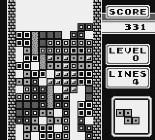
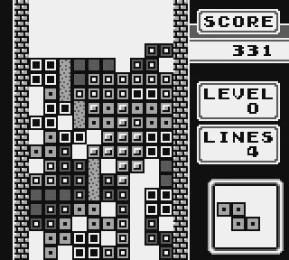

Check out this stacked game collection!
Tetris
The original Tetris game is here on the GameBoy, in all its original glory! And better yet, it comes bundled in alongside the system! Tetris is the addictive puzzle game that started it all, embracing our universal desire to create order out of chaos. In the decades to follow, Tetris became one of the most successful and recognizable video games, appearing on nearly every gaming platform available!
 

Super Mario Land
Ancient ruins, giant crabs, Koopa Troopas, flying stone heads, and hungry sharks await you. In the beautiful kingdom of Sarasaland, a mysterious alien has appeared and hypnotized the inhabitants while kidnapping Princess Daisy for himself! Travel over land, in the air, and underwater as Mario runs, jumps, and bounces his way to fortune and glory on his mission to save Princess Daisy and restore peace! Ancient ruins, tempestuous waters, and brand new challenges await!
The Legend of Zelda: Link's Awakening
Link has washed ashore on a mysterious island with strange and colorful inhabitants. To escape the island, Link must collect magical instruments across the land and awaken the Wind Fish. Explore a reimagined Koholint Island that’s been faithfully rebuilt in a brand-new art style that will entice fans and newcomers alike. Battle enemies as you conquer numerous dungeons and uncover the hidden secrets of the island!
Pokémon Red Version, Pokémon Blue Version, and Pokémon Yellow Version
You begin your journey in Pallet Town as a young boy, where a wise professor teaches you how to capture Pokémon, and then sends you on your way as a fledgling Trainer. During your journey through Kanto, you must capture Pokémon to record their information in your Pokédex, as well as competing in Gyms scattered throughout the region to eventually challenge the Pokémon League!
Metroid II: Return of Samus
Bounty Hunter Samus Aran faces off against the Metroid scourge once again in this epic sequel to the NES classic, Metroid. On the mysterious planet SR388, you'll find artifacts of a lost civilization that grant amazing powers. Cut through creatures in a buzz-saw blur! Run through hidden tunnels and climb sheer walls! Fight to the heart of the planet to search for and take down the merciless Metroid leaders!

Kirby's Dream Land
The evil King Dedede has stolen the magical Twinkle Stars, and if they're not recovered, the citizens of Dream Land will starve! Join Kirby, our cute and roly-poly hero to run, float and swim through the world and find these treasured Twinkle Stars. Suck up enemies and spit them back at others to bring back the peace to Dream Land!
Final Fantasy Adventure
The Tree of Mana feeds all life, and all life feeds the Tree of Mana. It grows high on top of Mt. Illusia, in a sacred shrine sealed by the waterfall and a magical pendant. Legend has it that the person that touches it will gain the ultimate power, and thus many a wicked man wants that power for himself. Go on a heroic great quest to protect the Tree of Mana, along with many friends you will meet along the way!
Wario Land
Things are really cookin' on Kitchen Island! Warion has heard that the pirates have a giant golden statue of Princess Toadstool. After being kicked out of the last castle by his rival, Mario, he's scheming to steal the statue in order to buy his very own! Wario's greed knows no bounds! Help him reach the ultimate prize!

Mole Mania
Join Muddy Mole in a race to defeat the evil farmer, Jinbe. Work your way through each puzzle by pushing, pulling, or throwing black balls to defeat and trap enemies. Defeat the bosses and solve all of the puzzles in Jinbe Land to reunite Muddy Mole with his beloved wife and kids. You'll dig the fast pace and challenging fun of Mole Mania!
Donkey Kong Land
It's time for another adventure with Donkey Kong and Diddy Kong! Make your way through over 30 levels by swinging, rolling, jumping and barrel-blasting through worlds swarming with enemies left and right. Creep along a mysterious pirate ship, trudge through fierce snow, swim in an unbelievable aquatic temple, and start some crazy capers in the sky. Be sure to be on the lookout for animal friends too!